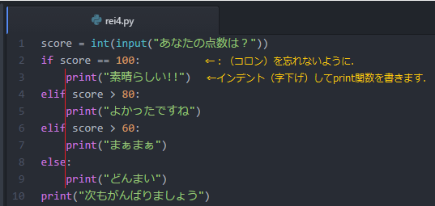
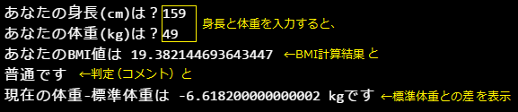
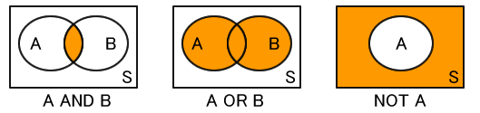
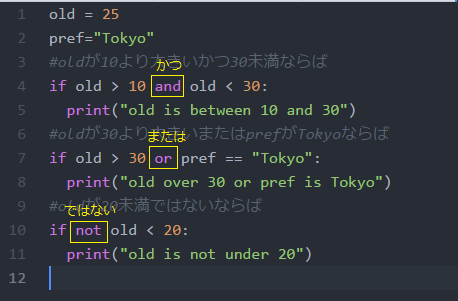

制御文とはプログラムの流れを必要に応じて変えたいときに使うもので、プログラミングをする上で欠かせないものです。
プログラムは本来、水のように上から下に向かって流れていきますが、それだけでは単純な処理しか定義できません。状況によって、「同じ処理を繰り返す」「演算結果によっては処理を中止したい」ということもあるでしょう。そんなときに活躍するのが制御文です。制御文でプログラムの流れを戻したり、せき止めたりすることもできます。
IF文は英語の「if」という単語の意味の通り、「もし～だったら・・・する」という、条件分岐を作る制御文です。条件が「成り立った場合」と「成り立たなかった場合」の2通りのプログラムの流れを作ることができます。もちろん、IF文を複数使用することにより2つ以上の流れを作ることもできます。
| if 条件式①：
#条件式の後にコロンをつけます。 ①が真のときの実行内容 [elif 条件式②： ②が真のときの実行内容] [else： ①も②も偽のときの実行内容] |
| #if は「もし」を意味します。 #条件式が真であれば、インデントされたブロックを実行します。 #elif が複数あるときは上位のものが優先されます。 #elif や else は省略できます。 |
▼点数を入力したとき、点数によって異なるメッセージが表示されるようにします。
▼インデント（自動で入らない場合はTabキーによる字下げ）によって、実行内容を指定します。10行目のprint関数はif分岐とは関係なく実行されます。
条件式のあとのコロンをわすれずに。「aとbは等しい」は a == b と書きます。

▼参考（書かなくてよい）：条件演算子(if
else)を使ってprint関数内でメッセージを振り分けることができます。
x if condition
else y (条件が成立すればx 、成立しなければyを返します。)

BMIとは国際基準の肥満度を示すための指数で、健康診断でもよく使用されています。
BMI=体重（kg）÷身長（m）2
で求めることができます。判定基準は国によって異なりますが、日本では男性は「22.0」女性は「21.0」が理想値だそうです。
| 肥満度判定 | BMI値 |
|
やせ（低体重） |
18.5未満 |
|
普通体重 |
18.5～25未満 |
|
肥満予備軍 |
25～35未満 |
|
肥満（中） |
35～40未満 |
|
肥満（大） |
40以上 |
▼実行時に、身長（cm）と体重（kg）を入力し、BMI値と肥満度の判定を出力するプログラムを作成します。
【発展課題】BMI=22を標準体重とした場合、現在の体重との差を出力してみましょう。ファイル名はrei5.pyのまま上書き保存

▽参考：round関数について
round関数を使用すれば簡単に四捨五入できます。書式はround( 数値 , 桁数
) です。引数の桁数は省略すると整数型として返されます。0と入れるとfloat型と扱われます。
|
round(3.141592 , 2 ) #結果は3.14 |
※python3.Xでは、丸めた先が偶数になるように値を丸める仕様となっています。
比較演算子のまとめです。
| a == b
# a が b と等しい a != b # a が b と異なる a < b # a が b よりも小さい a > b # a が b よりも大きい a <= b # a が b 以下である a >= b # a が b 以上である a <> b # a が b と異なる a is b # a が b と等しい a is not b # a が b と異なる a in b # a が b に含まれる a not in b # a が b に含まれない |
論理演算子（ブール演算子）を使うと、「aとbは等しい」かつ「cはdよりも大きい」など複雑な条件を記述することができます。
| a and b # a も b
も真であれば真 # score>=50 and score<80 （score50点以上かつ80点未満） a or b # a または b が真であれば真 # club="baseball" or club="tekken" not a # a が偽であれば真 # not score>=45 |

▽論理演算子を使った記述の例（見るだけでよい）

▽実行結果 上の条件式はどれも真なのでどれも出力されます。